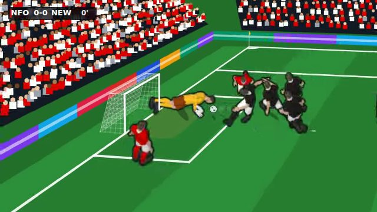
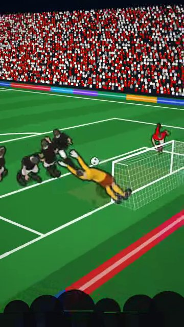
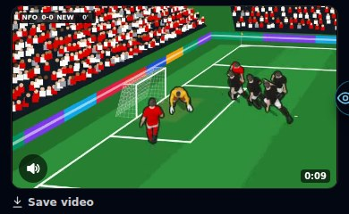

Goal videos have sound now: the crowd, the kick, the net and a commentator. A speaker button mutes them. A saved video keeps its sound.
The goal videos in the feed (v0.10) were silent.
v0.10 made only the pictures. Leo asked: "crowd noise and commentator but a mute toggle too."
Look forTurn your sound on. The kick, the saves, the net, the roar, then the commentator. The TV video ends with a replay line over the slow motion.


"a mute toggle too."

The game had no commentator voice at all.
The free voice reads; it does not shout. A real "GOOOAL!" needs a recorded voice.
Replace the lines on the Sound Board with better takes (an ElevenLabs voice, or one of you). No code change needed.
Each line is a recording made in advance. A recording cannot know the scorer.
Open. Names would need a recorded name for each player, or a voice made on the phone (which cannot go into a saved file).
Checked in a test browser only (it made a WebM with sound; the files on this page were turned into MP4).
Worked out from the code, not seen: an iPhone that cannot put sound in the file still plays the same sound next to the video, but a saved video from that phone is silent.
Recordings stay on the phone that played the match · a recording stops about 1.5 s after the goal · "The League" posts lower-league matches as Premier League · run star_legend_shares.sql and star_hall_of_fame.sql.
Say the word and I will list the lines to record; drop them on the Sound Board.
Added: every goal recorded as you play · real goal videos in the feed from three cameras (TV, behind the goal, a fan in the stand) · highlights reels · Save video · Goal Replays play the recording · a test page.
Fixed: the keeper on his head in the fan video · only highlights pages had videos · a second post made the video again · two videos at once · reel and camera file names · Save row and label layout.
Numbers: 7–15 KB a goal · 1.3–3.1 s to make a video · 266 tests.
Still open from this version: listed under Known issues above.
Added: your retired careers' records live on · a share picture of a whole career · the farewell match after the final whistle · share a career by code and compare it with a friend.
Fixed: set pieces in the farewell went to team-mates · every farewell was the same match · the same surname on both sides · the ovation came before 85' · four smaller playtest finds.
Numbers: 9 records · 8.9 chances to you before 85' (6.3 normally) · a 1080 × 1350 picture · 253 tests.
Still open from this version: two database files to run · sharing not seen end to end · the world does not age.
Added: one-hand keeper saves, catches, parries and fumbles · team-mates take touches and shoot, pass, head, block and clear with their own legs · the Animations test page and its dials · Settings → Look → Animations: New | Old.
Fixed: a caught ball stayed where the keeper stood while he slid away.
Numbers: outcome counts identical over 5,200 seeded chances (a look-only change).
Still open from this version: the 3D keeper has no catch-hold or get-up · a caught ball can sit slightly off the gloves in the classic view · strikes may still be subtle on a phone · four questions for you on that page.
Changed: every career is 20 seasons (no "Do you go again?" from 33) · the career overview is the end screen.
Added: "Final season" warning after season 19 · "The final whistle" after season 20 · the Hall of Fame on the title screen · the new All seasons page, with a New | Old switch.
Fixed: the last season's Ballon d'Or and awards were never counted · a season's row named the wrong club after a summer move · three playtest finds.
Numbers: 20 seasons · 0 careers lost by starting again · 108 → 15 KB per Hall career · 246 tests.
Still open from this version: star_hall_of_fame.sql to run · the world does not age.
Fixed: trial free kicks and penalties too hard · five-a-side keepers never dived · no way back from several screens · Goalie Mode scrolled.
Added: dribble passes with green/amber/red rings · knuckleball, power shot and keeper howlers (test match only) · New / Old switches for keepers and dribble runs.
Numbers: top corners v a 90 keeper 26% → 43% · trial free kicks 36% → 48% · 243 tests.
Still open from this version: listed under Known issues above.
Fixed: five-a-side could freeze solid mid-match. Added: dev cheats for testing · real extra power for owning your own club.
Fixed: Goalie Mode's pitch never drew. Added: other players on the pitch · penalty · free kick with a real wall.
Fixed: the aim sat about 0.42 m from the cursor. Added: first-time strike · near/far post · shot names.
Added: Goalie Mode in the Casino · a stadium behind the goal.
Fixed: scoring was halved · chances match their own name. Added: Simulate · up to 60 versions per chance type.